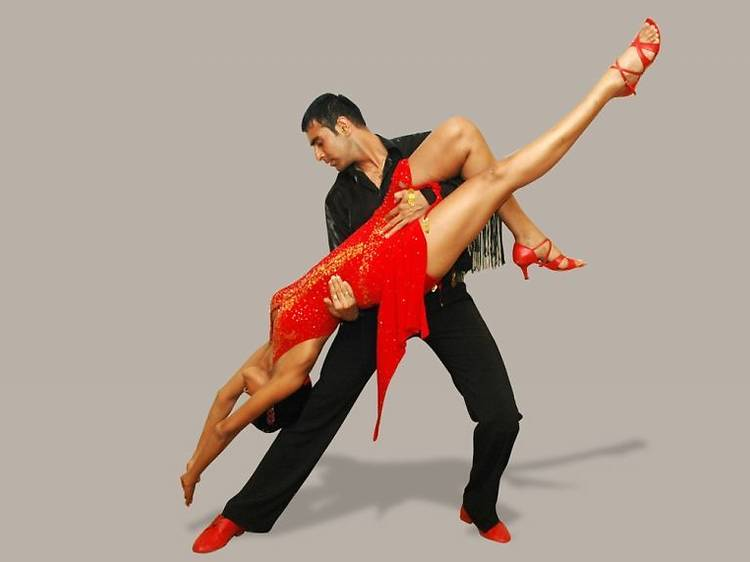
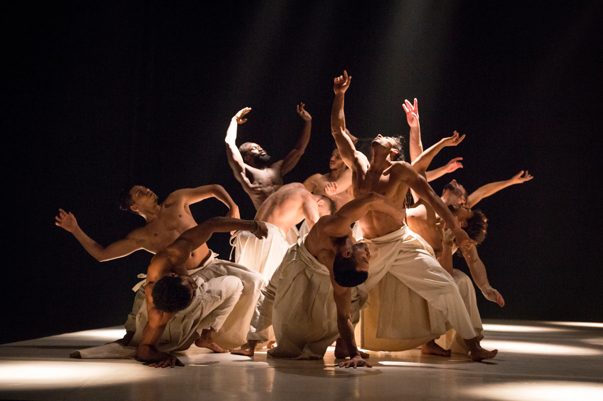
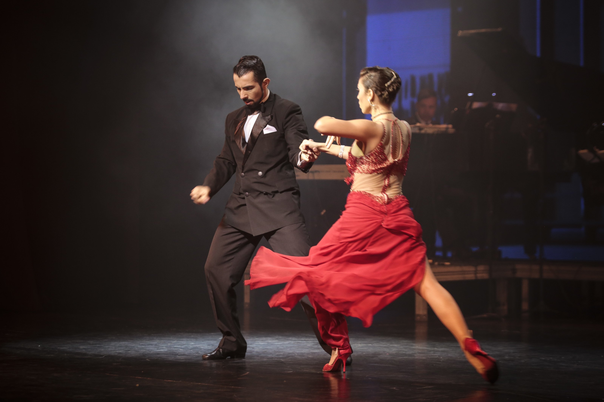
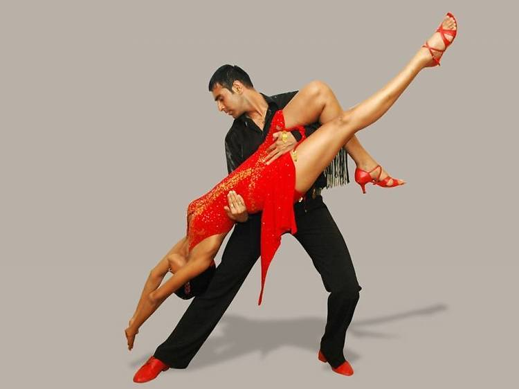
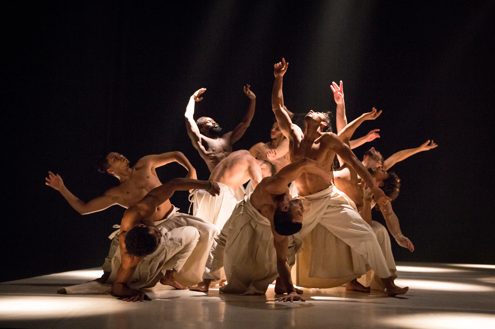
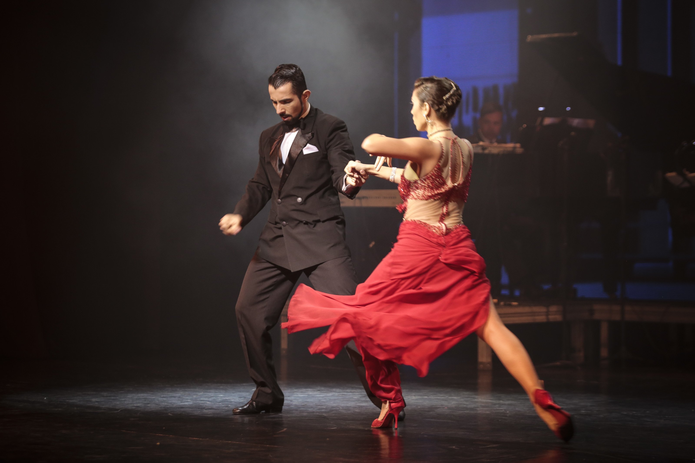

Dance is an art form that involves rhythmic movement of the body, usually to music, to express emotions, tell stories, or simply enjoy.


Dance is a form of performing art that consists of sequences of movement, either improvised or purposefully selected. Dance has been an important part of human culture, rituals, celebrations, and entertainment since before the birth of the earliest human civilizations. Dance can be categorized and described by its choreography, its repertoire of movements, or by its historical period or place of origin.
The history of dance is as old as the history of mankind. From ancient ritualistic dances to the modern dance styles of today, dance has always been a vital part of human expression. Different cultures have developed their unique styles of dance, reflecting their traditions, beliefs, and societal values. From the classical ballet of the Western world to the energetic folk dances of various regions, the evolution of dance is a rich and diverse tapestry.


 





Dancing offers numerous benefits, including improved physical fitness, enhanced coordination and balance, stress relief, and social connections. Dancing is a fun way to stay active and can improve cardiovascular health, build muscle strength, and increase flexibility. It also boosts mental health by reducing stress, improving mood, and increasing confidence.